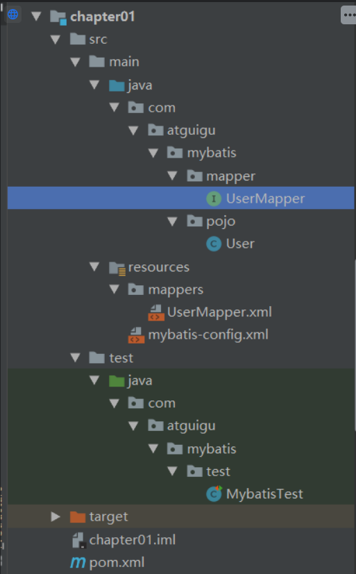
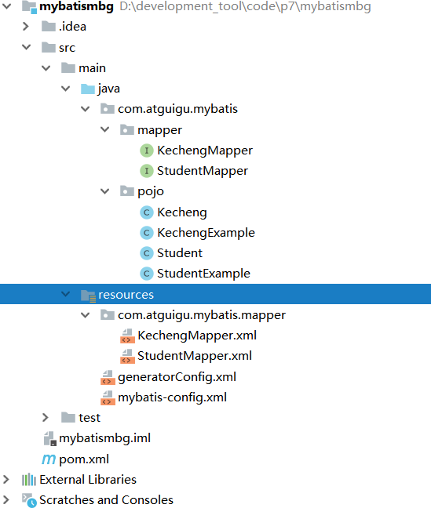

# 1、Mybatis 简介
# 1.1. 前言
什么是框架？
框架是一系列 jar 包，其本质是对 JDK 功能的扩展
框架是一组程序的集合，包含了一系列的最佳实践，作用是解决某一个领域的问题
# 1.2.Mybatis 简介
什么是 Mybatis
Mybatis 是一个半自动化 ORM（对象关系映射）框架，它内部封装了 JDBC，开发时只需要关注 Sql 语句本身，不需要花费精力去处理加载驱动，创建连接，创建 Statement 等，程序员可以直接编写 SQL 语句，可以严格控制 SQL 的执行性能，灵活度高
# 1.3.Mybatis 特性
- Mybatis 是支持定制化 SQL，存储过程以及高级映射的优秀的持久层框架
- Mybatis 避免了几乎所有的 JDBC 代码和手动设置参数以及获取结果集
- Mybatis 可以使用简单的
XML或注解用于配置和原始映射，将接口和 Java 的 Pojo（Plain Old Java Objects，普通的 java 对象）映射成数据库中的记录 - Mybatis 是一个半自动的 ORM（Object Relation Mapping）框架
什么是 ORM
Object Relation Mapping，对象关系映射。对象指的是 Java 对象，关系指的是数据库中的关系模型，对象关系映射，指的就是在 Java 对象和数据库的关系模型之间建立一种对应关系，比如用一个 Java 的 Student 类，去对应数据库中的一张 student 表，类中的属性和表中的列一一对应。Student 类就对应 student 表，一个 Student 对象就对应 student 表中的一行数据
为什么 mybatis 是半自动的 ORM 框架
用 mybatis 进行开发，需要手动编写 SQL 语句。而全自动的 ORM 框架，如 hibernate，则不需要编写 SQL 语句。用 hibernate 开发，只需要定义好 ORM 映射关系，就可以直接进行 CRUD 操作了。由于 mybatis 需要手写 SQL 语句，所以它有较高的灵活性，可以根据需要，自由地对 SQL 进行定制，也因为要手写 SQL，当要切换数据库时，SQL 语句可能就要重写，因为不同的数据库有不同的方言 (Dialect)，所以 mybatis 的数据库无关性低。虽然 mybatis 需要手写 SQL，但相比 JDBC，它提供了输入映射和输出映射，可以很方便地进行 SQL 参数设置，以及结果集封装。并且还提供了关联查询和动态 SQL 等功能，极大地提升了开发的效率。并且它的学习成本也比 hibernate 低很多
# 1.4.Mybatis 下载
Mybatis 官网下载
# 1.5. 和其他持久化层技术对比
JDBC
- SQL 夹杂在 java 代码中耦合度高，导致硬编码内伤
- 维护不易且实际开发需求中，SQL 有变化，频繁修改的情况多见
- 代码冗长，开发效率低
Hibernate 和 JPA
- 操作简便，开发效率高
- 程序中 SQL 长、难、复杂需要绕过框架
- 内部自动生产的 SQL, 不容易做特殊优化
- 基于全映射的全自动框架，大量字段的 POJO 进行部分映射的比较困难
- 反射操作太多，导致数据库性能下降
Mybatis
- 轻量级，性能出色
- SQL 和 java 编码分开，功能边界清晰，java 代码专注业务，SQL 语句专注数据
- 开发效率稍逊于 Hibernate，但是可以接受
# 2、搭建 Mybatis
# 2.1. 开发环境
IDE：idea 2019.2
搭建工具：maven 3.5.4
Mysql 版本：Mysql 8
Mybatis 版本：Mybatis 3.5.7
MySQL 不同版本的注意事项
1、驱动类 driver-class-name
MySQL 5 版本使用
JDBC 5驱动，驱动类使用：com.mysql.jdbc.DriverMySQL 8 版本使用
JDBC 8驱动，驱动类使用：com.mysql.jdbc.Driver2、链接地址 url
MySQL 5 版本的 url：
jdbc:mysql://localhost:3306/ssm
MySQL 8 版本的 url：
jdbc:mysql://localhost:3306/ssm?serverTimezone=UTC
否则运行测试用例报告如下错误：
java.sql.SQLException: The server time zone value 'Öйú±ê׼ʱ¼ä' is unrecognized or
represents more
项目结构：

# 2.2. 创建 Maven 工程
引入依赖
pom.xml
<dependencies> | |
<!-- Mybatis 核心 --> | |
<dependency> | |
<groupId>org.mybatis</groupId> | |
<artifactId>mybatis</artifactId> | |
<version>3.5.7</version> | |
</dependency> | |
<!-- junit 测试 --> | |
<dependency> | |
<groupId>junit</groupId> | |
<artifactId>junit</artifactId> | |
<version>4.12</version> | |
<scope>test</scope> | |
</dependency> | |
<!-- MySQL 驱动 --> | |
<dependency> | |
<groupId>mysql</groupId> | |
<artifactId>mysql-connector-java</artifactId> | |
<version>5.1.3</version> | |
</dependency> | |
</dependencies> |
创建表 user
CREATE TABLE USER( | |
id INT PRIMARY KEY AUTO_INCREMENT, | |
username VARCHAR(20), | |
PASSWORD VARCHAR(20), | |
age INT, | |
gender CHAR(1), | |
email VARCHAR(50) | |
); |
User 实体类
package com.atguigu.mybatis.pojo; | |
/** | |
* @author 李智勇 | |
* @version 1.0 | |
*/ | |
public class User { | |
private Integer id; | |
private String username; | |
private String password; | |
private Integer age; | |
private String gender; | |
private String email; | |
public Integer getId() { | |
return id; | |
} | |
public void setId(Integer id) { | |
this.id = id; | |
} | |
public String getUsername() { | |
return username; | |
} | |
public void setUsername(String username) { | |
this.username = username; | |
} | |
public String getPassword() { | |
return password; | |
} | |
public void setPassword(String password) { | |
this.password = password; | |
} | |
public Integer getAge() { | |
return age; | |
} | |
public void setAge(Integer age) { | |
this.age = age; | |
} | |
public String getGender() { | |
return gender; | |
} | |
public void setGender(String gender) { | |
this.gender = gender; | |
} | |
public String getEmail() { | |
return email; | |
} | |
public void setEmail(String email) { | |
this.email = email; | |
} | |
@Override | |
public String toString() { | |
return "User{" + | |
"id=" + id + | |
", username='" + username + '\'' + | |
", password='" + password + '\'' + | |
", age=" + age + | |
", gender='" + gender + '\'' + | |
", email='" + email + '\'' + | |
'}'; | |
} | |
} |
# 2.3. 创建 Mybatis 核心配置文件
习惯上命名为 mybatis-config.xml，这个文件名仅仅只是建议，并非强制要求。将来整合 Spring 之后，这个配置文件可以省略，所以大家操作时可以直接复制、粘贴。
核心配置文件主要用于配置连接数据库的环境以及 Mybatis 的全局配置信息
核心配置文件存放的位置是 src/main/resources 目录下
mybatis-config.xml
<?xml version="1.0" encoding="UTF-8" ?> | |
<!DOCTYPE configuration | |
PUBLIC "-//mybatis.org//DTD Config 3.0//EN" | |
"http://mybatis.org/dtd/mybatis-3-config.dtd"> | |
<configuration> | |
<!-- environments 表示配置 Mybatis 的开发环境，可以配置多个环境，在众多具体环境中， | |
使用 default 属性指定实际运行时使用的环境。default 属性的取值是 environment 标签的 id 属性的值。 --> | |
<environments default="development"> | |
<!-- environment 表示配置 Mybatis 的一个具体的环境 --> | |
<environment id="development"> | |
<!-- Mybatis 的内置的事务管理器 --> | |
<transactionManager type="JDBC"/> | |
<!-- 配置数据源 --> | |
<dataSource type="POOLED"> | |
<!-- 建立数据库连接的具体信息 --> | |
<property name="driver" value="com.mysql.jdbc.Driver"/> | |
<property name="url" value="jdbc:mysql://localhost:3306/mybatis"/> | |
<property name="username" value="root"/> | |
<property name="password" value="root"/> | |
</dataSource> | |
</environment> | |
</environments> | |
<!-- 引入 mybatis 的映射文件 --> | |
<mappers> | |
<!-- Mapper 注册：指定 Mybatis 映射文件的具体位置 --> | |
<!-- mapper 标签：配置一个具体的 Mapper 映射文件 --> | |
<!-- resource 属性：指定 Mapper 映射文件的实际存储位置，这里需要使用一个以类路径根目录为基准的相对路径 --> | |
<!-- 对 Maven 工程的目录结构来说，resources 目录下的内容会直接放入类路径，所以这里我们可以以 resources 目录为基准 --> | |
<mapper resource="mappers/UserMapper.xml"/> | |
</mappers> | |
</configuration> |
# 2.4. 创建 mapper 接口
Mybatis 中的 mapper 接口相当于以前的 dao，但是区别在于，mapper 仅仅是接口，我们不需要提供实现类
package com.atguigu.mybatis.mapper; | |
/** | |
* mapper 接口 | |
*/ | |
public interface UserMapper { | |
int insertUser(); | |
} |
# 2.5. 创建 Mybatis 的映射文件
相关概念：ORM（Object Relationship Mapping）对象关系映射。
- 对象：Java 的实体类对象
- 关系：关系型数据库
- 映射：二者之间的对应关系
下表列举的是最简单的单表映射（一个表和一个类）：
| Java 概念 | 数据库概念 |
|---|---|
| 类 | 表 |
| 属性 | 字段 / 列 |
| 对象 | 记录 / 行 |
映射文件的命名规则：
- 接口名称必须和 xml 文件名称一致
- 接口中方法名称必须是 xml 文件中的 sql 标签中的 id 的值
- xml 文件中 namespace 的值必须是接口的全类路径名
- 参数类型一致
- 返回值类型一致
UserMapper
<?xml version="1.0" encoding="UTF-8" ?> | |
<!DOCTYPE mapper | |
PUBLIC "-//mybatis.org//DTD Mapper 3.0//EN" | |
"http://mybatis.org/dtd/mybatis-3-mapper.dtd"> | |
<!-- mapper 是根标签，namespace 属性：在 Mybatis 全局范围内找到一个具体的 Mapper 配置 --> | |
<!-- 引入接口后，为了方便通过接口全类名来找到 Mapper 配置文件，所以通常将 namespace 属性设置为接口全类名 --> | |
<mapper namespace="com.atguigu.mybatis.mapper.UserMapper"> | |
<!-- 编写具体的 SQL 语句，使用 id 属性唯一的标记一条 SQL 语句 --> | |
<!-- resultType 属性：指定封装查询结果的 int 类型 --> | |
<!--int insertUser();--> | |
<insert id="insertUser"> | |
<!-- Mybatis 负责把 SQL 语句中的 #{} 部分替换成 “?” 占位符，在 #{} 内部还是要声明一个见名知意的名称 --> | |
insert into user values(null,'admin','123456',23,'n','12345@qq.com'); | |
</insert> | |
</mapper> |
# 2.6. 创建 junit 测试类
注意：添加，修改，删除都需要提交事务，方法：sqlSessio.commit ()，
也可以设置自动提交： SqlSession sqlSession = sqlsessionFactory.openSession (true);
数据库结果：
3 admin 123456 23 n 12345@qq.com |
# 2.7. 加入 log4j 日志功能
# 2.7.1. 加入依赖
日志依赖
<!--log4j 日志 --> | |
<dependency> | |
<groupId>ch.qos.logback</groupId> | |
<artifactId>logback-classic</artifactId> | |
<version>1.2.3</version> | |
</dependency> |
# 2.7.2. 配置 xml
注意：名字必须为 log4j.xml
log4j
<?xml version="1.0" encoding="UTF-8"?> | |
<configuration debug="true"> | |
<!-- 指定日志输出的位置，ConsoleAppender 表示输出到控制台 --> | |
<appender name="STDOUT" | |
class="ch.qos.logback.core.ConsoleAppender"> | |
<encoder> | |
<!-- 日志输出的格式 --> | |
<!-- 按照顺序分别是：时间、日志级别、线程名称、打印日志的类、日志主体内容、换行 --> | |
<pattern>[%d{HH:mm:ss.SSS}] [%-5level] [%thread] [%logger] [%msg]%n</pattern> | |
<charset>UTF-8</charset> | |
</encoder> | |
</appender> | |
<!-- 设置全局日志级别。日志级别按顺序分别是：TRACE、DEBUG、INFO、WARN、ERROR --> | |
<!-- 指定任何一个日志级别都只打印当前级别和后面级别的日志。 --> | |
<root level="INFO"> | |
<!-- 指定打印日志的 appender，这里通过 “STDOUT” 引用了前面配置的 appender --> | |
<appender-ref ref="STDOUT" /> | |
</root> | |
<!-- 根据特殊需求指定局部日志级别 --> | |
<logger name="com.atguigu.mybatis" level="DEBUG" /> | |
</configuration> |
# 2.7.3. 日志级别说明
日志级别
FATAL（致命) > ERROR (错误）> WARN (警告) > INFO (信息) > DEBUG (调试）
从左到右打印的内容越来越详细
# 2.8. 执行结果
Mybatis Test
package com.atguigu.mybatis.test; | |
import com.atguigu.mybatis.mapper.UserMapper; | |
import com.atguigu.mybatis.pojo.User; | |
import org.apache.ibatis.io.Resources; | |
import org.apache.ibatis.session.SqlSession; | |
import org.apache.ibatis.session.SqlSessionFactory; | |
import org.apache.ibatis.session.SqlSessionFactoryBuilder; | |
import org.junit.Test; | |
import java.io.IOException; | |
import java.io.InputStream; | |
/** | |
* @author 李智勇 | |
* @version 1.0 | |
*/ | |
public class MybatisTest { | |
@Test | |
public void testInsert() throws IOException { | |
// 获取核心配置文件的输入流 | |
InputStream is = Resources.getResourceAsStream("mybatis-config.xml"); | |
// 获取 SqlSessionFactoryBuilder 对象 | |
SqlSessionFactoryBuilder sqlSessionFactoryBuilder = new SqlSessionFactoryBuilder(); | |
// 获取 SqlSessionFactory 对象 | |
SqlSessionFactory sqlsessionFactory = sqlSessionFactoryBuilder.build(is); | |
// 获取 sql 的会话对象 SqlSession，是 Mybatis 提供的操作数据库的对象 | |
SqlSession sqlSession = sqlsessionFactory.openSession(true); | |
// 获取 UserMapper 接口的代理实现类对象 | |
UserMapper userMapper = sqlSession.getMapper(UserMapper.class); | |
// 调用 mapper 接口中的方法，实现添加用户信息的功能 | |
int result = userMapper.insertUser(); | |
System.out.println("结果：" + result); | |
// 提交事务 | |
sqlSession.commit(); | |
// 关闭资源 | |
sqlSession.close(); | |
} | |
} |
执行结果
D:\development_tool\developer_kits\idea\jdk11\bin\java.exe -ea -Didea.test.cyclic.buffer.size=1048576 "-javaagent:D:\development_tool\developer_kits\idea\IntelliJ IDEA 2018.2.8\lib\idea_rt.jar=56761:D:\development_tool\developer_kits\idea\IntelliJ IDEA 2018.2.8\bin" -Dfile.encoding=UTF-8 -classpath "D:\development_tool\developer_kits\idea\IntelliJ IDEA 2018.2.8\lib\idea_rt.jar;D:\development_tool\developer_kits\idea\IntelliJ IDEA 2018.2.8\plugins\junit\lib\junit-rt.jar;D:\development_tool\developer_kits\idea\IntelliJ IDEA 2018.2.8\plugins\junit\lib\junit5-rt.jar;D:\development_tool\code\breakThroughInvolution\mybatis\chapter01\target\test-classes;D:\development_tool\code\breakThroughInvolution\mybatis\chapter01\target\classes;D:\development_tool\developer_kits\repository_boot\repository_boot\org\mybatis\mybatis\3.5.7\mybatis-3.5.7.jar;D:\development_tool\developer_kits\repository_boot\repository_boot\junit\junit\4.12\junit-4.12.jar;D:\development_tool\developer_kits\repository_boot\repository_boot\org\hamcrest\hamcrest-core\1.3\hamcrest-core-1.3.jar;D:\development_tool\developer_kits\repository_boot\repository_boot\mysql\mysql-connector-java\5.1.3\mysql-connector-java-5.1.3.jar;D:\development_tool\developer_kits\repository_boot\repository_boot\ch\qos\logback\logback-classic\1.2.3\logback-classic-1.2.3.jar;D:\development_tool\developer_kits\repository_boot\repository_boot\ch\qos\logback\logback-core\1.2.3\logback-core-1.2.3.jar;D:\development_tool\developer_kits\repository_boot\repository_boot\org\slf4j\slf4j-api\1.7.25\slf4j-api-1.7.25.jar" com.intellij.rt.execution.junit.JUnitStarter -ideVersion5 -junit4 com.atguigu.mybatis.test.MybatisTest,testInsert | |
20:52:18.392 [main] DEBUG org.apache.ibatis.logging.LogFactory - Logging initialized using 'class org.apache.ibatis.logging.slf4j.Slf4jImpl' adapter. | |
20:52:18.409 [main] DEBUG org.apache.ibatis.datasource.pooled.PooledDataSource - PooledDataSource forcefully closed/removed all connections. | |
20:52:18.409 [main] DEBUG org.apache.ibatis.datasource.pooled.PooledDataSource - PooledDataSource forcefully closed/removed all connections. | |
20:52:18.409 [main] DEBUG org.apache.ibatis.datasource.pooled.PooledDataSource - PooledDataSource forcefully closed/removed all connections. | |
20:52:18.409 [main] DEBUG org.apache.ibatis.datasource.pooled.PooledDataSource - PooledDataSource forcefully closed/removed all connections. | |
20:52:18.467 [main] DEBUG org.apache.ibatis.transaction.jdbc.JdbcTransaction - Opening JDBC Connection | |
20:52:18.600 [main] DEBUG org.apache.ibatis.datasource.pooled.PooledDataSource - Created connection 1473981203. | |
20:52:18.601 [main] DEBUG org.apache.ibatis.transaction.jdbc.JdbcTransaction - Setting autocommit to false on JDBC Connection [com.mysql.jdbc.JDBC4Connection@57db2b13] | |
20:52:18.603 [main] DEBUG com.atguigu.mybatis.mapper.UserMapper.insertUser - ==> Preparing: insert into user values(null,'admin','123456',23,'n','12345@qq.com'); | |
20:52:18.625 [main] DEBUG com.atguigu.mybatis.mapper.UserMapper.insertUser - ==> Parameters: | |
20:52:18.626 [main] DEBUG com.atguigu.mybatis.mapper.UserMapper.insertUser - <== Updates: 1 | |
结果：1 | |
20:52:18.626 [main] DEBUG org.apache.ibatis.transaction.jdbc.JdbcTransaction - Committing JDBC Connection [com.mysql.jdbc.JDBC4Connection@57db2b13] | |
20:52:18.641 [main] DEBUG org.apache.ibatis.transaction.jdbc.JdbcTransaction - Resetting autocommit to true on JDBC Connection [com.mysql.jdbc.JDBC4Connection@57db2b13] | |
20:52:18.641 [main] DEBUG org.apache.ibatis.transaction.jdbc.JdbcTransaction - Closing JDBC Connection [com.mysql.jdbc.JDBC4Connection@57db2b13] | |
20:52:18.641 [main] DEBUG org.apache.ibatis.datasource.pooled.PooledDataSource - Returned connection 1473981203 to pool. | |
Process finished with exit code 0 |
# 3、核心配置文件详解
mybatis-config.xml
<?xml version="1.0" encoding="UTF-8" ?> | |
<!DOCTYPE configuration | |
PUBLIC "-//mybatis.org//DTD Config 3.0//EN" | |
"http://mybatis.org/dtd/mybatis-3-config.dtd"> | |
<configuration> | |
<!-- | |
MyBatis 核心配置文件中的标签必须要按照指定的顺序配置： | |
properties?,settings?,typeAliases?,typeHandlers?, | |
objectFactory?,objectWrapperFactory?,reflectorFactory?, | |
plugins?,environments?,databaseIdProvider?,mappers? | |
--> | |
<!-- 引入 properties 文件，此后就可以在当前文件中使用 ${key} 的方式访问 value--> | |
<properties resource="jdbc.properties" /> | |
<!-- | |
typeAliases：设置类型别名，即为某个具体的类型设置一个别名 | |
在 MyBatis 的范围中，就可以使用别名表示一个具体的类型 | |
--> | |
<typeAliases> | |
<!-- | |
type：设置需要起别名的类型 | |
alias：设置某个类型的别名 | |
--> | |
<!--<typeAlias type="com.atguigu.mybatis.pojo.User" alias="abc"></typeAlias>--> | |
<!-- 若不设置 alias，当前的类型拥有默认的别名，即类名且不区分大小写 --> | |
<!--<typeAlias type="com.atguigu.mybatis.pojo.User"></typeAlias>--> | |
<!-- 通过包设置类型别名，指定包下所有的类型将全部拥有默认的别名，即类名且不区分大小写 --> | |
<package name="com.atguigu.mybatis.pojo"/> | |
</typeAliases> | |
<!-- | |
environments：配置连接数据库的环境 | |
属性： | |
default：设置默认使用的环境的 id | |
--> | |
<environments default="development"> | |
<!-- | |
environment：设置一个具体的连接数据库的环境 | |
属性： | |
id：设置环境的唯一标识，不能重复 | |
--> | |
<environment id="development"> | |
<!-- | |
transactionManager：设置事务管理器 | |
属性： | |
type：设置事务管理的方式 | |
type="JDBC|MANAGED" | |
JDBC：表示使用 JDBC 中原生的事务管理方式 | |
MANAGED：被管理，例如 Spring | |
--> | |
<transactionManager type="JDBC"/> | |
<!-- | |
dataSource：设置数据源 | |
属性： | |
type：设置数据源的类型 | |
type="POOLED|UNPOOLED|JNDI" | |
POOLED：表示使用数据库连接池 | |
UNPOOLED：表示不使用数据库连接池 | |
JNDI：表示使用上下文中的数据源 | |
--> | |
<dataSource type="POOLED"> | |
<property name="driver" value="${jdbc.driver}"/> | |
<property name="url" value="${jdbc.url}"/> | |
<property name="username" value="${jdbc.username}"/> | |
<property name="password" value="${jdbc.password}"/> | |
</dataSource> | |
</environment> | |
<environment id="test"> | |
<transactionManager type="JDBC"/> | |
<dataSource type="POOLED"> | |
<property name="driver" value="com.mysql.cj.jdbc.Driver"/> | |
<property name="url" value="jdbc:mysql://localhost:3306/ssm?serverTimezone=UTC"/> | |
<property name="username" value="root"/> | |
<property name="password" value="123456"/> | |
</dataSource> | |
</environment> | |
</environments> | |
<!-- 引入 mybatis 的映射文件 --> | |
<mappers> | |
<!--<mapper resource="mappers/UserMapper.xml"/>--> | |
<!-- | |
以包的方式引入映射文件，但是必须满足两个条件： | |
1、mapper 接口和映射文件所在的包必须一致 | |
2、mapper 接口的名字和映射文件的名字必须一致 | |
--> | |
<package name="com.atguigu.mybatis.mapper"/> | |
</mappers> | |
</configuration> |
# 4、MyBatis 的增删改查
# 4.1、新增
<!--int insertUser();--> | |
<insert id="insertUser"> | |
insert into t_user values(null,'admin','123456',23,'男','12345@qq.com') | |
</insert> |
# 4.2、删除
<!--void deleteUser();--> | |
<delete id="deleteUser"> | |
delete from t_user where id = 3 | |
</delete> |
# 4.3、修改
<!--void updateUser();--> | |
<update id="updateUser"> | |
update t_user set username='root',password='123' where id = 3 | |
</update> |
# 4.4、查询一个实体类对象
<!--User getUserById();--> | |
<select id="getUserById" resultType="com.atguigu.mybatis.pojo.User"> | |
select * from t_user where id = 1 | |
</select> |
# 4.5、查询 list 集合
<!--List<User> getAllUser();--> | |
<select id="getAllUser" resultType="User"> | |
select * from t_user | |
</select> |
# 4.6、注意事项
注意：
mapper 接口和映射文件要保证两个一致：
1、mapper 接口的全类名和映射文件的 namespace 一致
2、mapper 接口中的方法的方法名要和映射文件中的 sql 的 id 保持一致查询的标签 select 必须设置属性 resultType 或 resultMap，用于设置实体类和数据库表的映射关系
resultType：自动映射，用于属性名和表中字段名一致的情况
resultMap：自定义映射，用于一对多或多对一或字段名和属性名不一致的情况
# 2.7、使用注解增删改查
查询：@Select(); | |
添加：@Insert(); | |
修改：@Update(); | |
删除：@Delete(); | |
如上只需要写在mapper接口的方法上即可，括号中写的是sql语句 |
# 5、MyBatis 获取参数值的两种方式
MyBatis 获取参数值的两种方式：${} 和 #{}
${} 的本质就是字符串拼接，#{} 的本质就是占位符赋值
${} 使用字符串拼接的方式拼接 sql，若为字符串类型或日期类型的字段进行赋值时，需要手动加单引号；但是 #{} 使用占位符赋值的方式拼接 sql，此时为字符串类型或日期类型的字段进行赋值时，可以自动添加单引号
# 5.1、单个字面量类型的参数
若 mapper 接口中的方法参数为单个的字面 $ 量类型
此时可以使用 ${} 和 #{} 以任意的名称获取参数的值，
注意 ${} 需要手动加单引号
# 5.2、多个字面量类型的参数
若 mapper 接口中的方法参数为多个时
此时 MyBatis 会自动将这些参数放在一个 map 集合中，以 arg0,arg1... 为键，以参数为值；以 param1,param2... 为键，以参数为值；因此只需要通过 ${} 和 #{} 访问 map 集合的键就可以获取相对应的值，
注意 ${} 需要手动加单引号
# 5.3、map 集合类型的参数
若 mapper 接口中的方法需要的参数为多个时，此时可以手动创建 map 集合，将这些数据放在 map 中
只需要通过 ${} 和 #{} 访问 map 集合的键就可以获取相对应的值，
注意 ${} 需要手动加单引号
# 5.4、实体类类型的参数
若 mapper 接口中的方法参数为实体类对象时
此时可以使用 ${} 和 #{}，通过访问实体类对象中的属性名获取属性值，
注意 ${} 需要手动加单引号
# 5.5、使用 @Param 标识参数
可以通过 @Param 注解标识 mapper 接口中的方法参数
此时，会将这些参数放在 map 集合中，以 @Param 注解的 value 属性值为键，以参数为值；以 param1,param2... 为键，以参数为值；只需要通过 ${} 和 #{} 访问 map 集合的键就可以获取相对应的值
注意 ${} 需要手动加单引号
# 6、MyBatis 的各种查询功能
# 6.1、查询一个实体类对象
<!--User getUserById(@Param("id") Integer id);--> | |
<select id="getUserById" resultType="User"> | |
select * from t_user where id = #{id} | |
</select> |
# 6.2、查询一个 list 集合
<!--List<User> getAllUser();--> | |
<select id="getAllUser" resultType="User"> | |
select * from t_user | |
</select> |
当查询的数据为多条时，不能使用实体类作为返回值，否则会抛出异常
TooManyResultsException；但是若查询的数据只有一条，可以使用实体类或集合作为返回值
# 6.3、查询单个数据
<!--Integer getCount();--> | |
<!-- | |
MyBatis 中为 Java 中常用的类型设置了类型别名 | |
Integer：Integer，int | |
int：_int,_integer | |
Map：map | |
String：string | |
--> | |
<select id="getCount" resultType="int"> | |
select count(*) from t_user | |
</select> |
# 6.4、查询一条数据为 map 集合
map 的好处
可以查询任何东西
例如当我们要查询信息时，查询的结果没有相对应的实体类时
查询的结果：key-> 数据库字段 value-> 数据库的值
注意：如果查询的数据为 null，不会放到 map 集合中
<!--Map<String, Object> getUserByIdToMap(@Param("id") Integer id);--> | |
<select id="getUserByIdToMap" resultType="map"> | |
select * from t_user where id = #{id} | |
</select> |
# 6.5、查询多条数据为 map 集合
# ①方式一
/** | |
* 查询所有用户信息为 map 集合 | |
* @return | |
* 将表中的数据以 map 集合的方式查询，一条数据对应一个 map；若有多条数据， | |
* 就会产生多个 map 集合，此 时可以将这些 map 放在一个 list 集合中获取 | |
*/ | |
List<Map<String, Object>> getAllUserToMap(); |
<!--List<Map<String, Object>> getAllUserToMap();--> | |
<select id="getAllUserToMap" resultType="map"> | |
select * from t_user | |
</select> |
# ②方式二
/** | |
* 查询所有的用户信息为 map 集合 | |
* 可以将每条数据转换的 map 集合放在一个大的 map 中，但是必须要通过 @MapKey 注解 | |
* 将查询的某个字段的值作为大的 map 的键 | |
* 值是每条数据所对应的 map 集合 | |
**/ | |
@MapKey("id") | |
Map<String, Object> getAllUserToMap(); |
<!--List<Map<String, Object>> getAllUserToMap();--> | |
<!-- | |
{ | |
1={password=123456, gender = 男，id=1, age=23, email=12345@qq.com, username=admin}, | |
2={password=123, gender = 男，id=2, age=23, email=12345@qq.com, username=zhangsan}, | |
3={password=123456, gender = 女，id=3, age=33, email=123@qq.com, username=root}, | |
4={password=123, id=4, username=lisi} | |
} | |
--> | |
<select id="getAllUserToMap" resultType="map"> | |
select * from t_user | |
</select> |
# 7、特殊 SQL 的执行
# 7.1、模糊查询
<!--List<User> getUserByLike(@Param("mohu") String mohu);--> | |
<select id="getUserByLike" resultType="User"> | |
<!-- 方式一：使用 ${} 直接拼接 | |
select * from t_user where username like '%${mohu}%'--> | |
<!-- 方式二：使用字符串函数 concat 拼接 | |
select * from t_user where username like concat ('%',#{mohu},'%')--> | |
<!-- 方式三 (建议)： 用双引号包裹 % 号，解析后为 '% xxx'%--> | |
select * from t_user where username like "%"#{mohu}"%" | |
</select> |
# 7.2、批量删除
<!--void deleteMoreUser (@Param ("ids") String ids);//ids:9,10 | |
注意：不能使用 #{}，因为解析后为：('9,10'), 自动加上了单引号，直接变成了字符串 | |
因此要使用 ${} 连接符 | |
--> | |
<delete id="deleteMoreUser"> | |
delete from t_user where id in(${ids}) | |
</delete> |
# 7.3、动态设置表名
<!--List<User> getUserList (@Param ("tableName") String tableName); | |
使用场景： | |
例如 user 表和 vip 表，字段名都一样，需要查询时就要动态设置表名 | |
注意：不能使用 #{}，因为解析后会自动加上单引号，因此使用 ${} | |
--> | |
<select id="getUserList" resultType="User"> | |
select * from ${tableName} | |
</select> |
# 7.4、添加功能获取自增的主键
场景模拟：
t_clazz(clazz_id,clazz_name)
t_student(student_id,student_name,clazz_id)
1、添加班级信息
2、获取新添加的班级的 id
3、为班级分配学生，即将某学生的班级 id 修改为新添加的班级的 id
<!--void insertUser(User user);--> | |
<!-- | |
useGeneratedKeys: 表示当前添加功能使用自增的主键 | |
keyProperty: 将添加的数据的自增主键为实体类类型的参数的属性赋值 | |
--> | |
<insert id="insertUser" useGeneratedKeys="true" keyProperty="id"> | |
insert into t_user values(null,#{username},#{password},#{age},#{gender},#{email}) | |
</insert> |
注解版获取自增的主键
@Insert("insert into t_user values(null,#{username},#{password},#{age},#{gender},#{email}"); | |
@Potions(useGeneratedKeys=true,keyProperty="id",keyColumn="id"); | |
void insertUser(User user); |
这里的 useGeneratedKeys 参数只针对 insert 语句生效
useGeneratedKeys：是否返回自增 id
keyProperty：表示实体类中的成员变量
keyColumn：对应数据库中的列名
# 8、自定义映射 resultMap
Emp
package com.atguigu.mybatis.pojo; | |
/** | |
* Date:2022/6/29 | |
* Author:ybc | |
* Description: | |
*/ | |
public class Emp { | |
private Integer empId; | |
private String empName; | |
private Integer age; | |
private String gender; | |
private Dept dept; | |
public Emp() { | |
} | |
public Emp(Integer empId, String empName, Integer age, String gender) { | |
this.empId = empId; | |
this.empName = empName; | |
this.age = age; | |
this.gender = gender; | |
} | |
public Integer getEmpId() { | |
return empId; | |
} | |
public void setEmpId(Integer empId) { | |
this.empId = empId; | |
} | |
public String getEmpName() { | |
return empName; | |
} | |
public void setEmpName(String empName) { | |
this.empName = empName; | |
} | |
public Integer getAge() { | |
return age; | |
} | |
public void setAge(Integer age) { | |
this.age = age; | |
} | |
public String getGender() { | |
return gender; | |
} | |
public void setGender(String gender) { | |
this.gender = gender; | |
} | |
@Override | |
public String toString() { | |
return "Emp{" + | |
"empId=" + empId + | |
", empName='" + empName + '\'' + | |
", age=" + age + | |
", gender='" + gender + '\'' + | |
", dept=" + dept + | |
'}'; | |
} | |
public Dept getDept() { | |
return dept; | |
} | |
public void setDept(Dept dept) { | |
this.dept = dept; | |
} | |
} |
Dept
package com.atguigu.mybatis.pojo; | |
import java.util.List; | |
/** | |
* Date:2022/6/29 | |
* Author:ybc | |
* Description: | |
*/ | |
public class Dept { | |
private Integer deptId; | |
private String deptName; | |
private List<Emp> emps; | |
public Dept() { | |
} | |
public Dept(Integer deptId, String deptName) { | |
this.deptId = deptId; | |
this.deptName = deptName; | |
} | |
public Integer getDeptId() { | |
return deptId; | |
} | |
public void setDeptId(Integer deptId) { | |
this.deptId = deptId; | |
} | |
public String getDeptName() { | |
return deptName; | |
} | |
public void setDeptName(String deptName) { | |
this.deptName = deptName; | |
} | |
public List<Emp> getEmps() { | |
return emps; | |
} | |
public void setEmps(List<Emp> emps) { | |
this.emps = emps; | |
} | |
@Override | |
public String toString() { | |
return "Dept{" + | |
"deptId=" + deptId + | |
", deptName='" + deptName + '\'' + | |
", emps=" + emps + | |
'}'; | |
} | |
} |
# 8.1、resultMap 处理字段和属性的映射关系
若字段名和实体类中的属性名不一致，有三种解决方案
mybatis-config.xml
<settings> | |
<!-- 将下划线映射为驼峰 --> | |
<setting name="mapUnderscoreToCamelCase" value="true"/> | |
<!-- 开启延迟加载 --> | |
<setting name="lazyLoadingEnabled" value="true"/> | |
<!-- 按需加载 --> | |
<setting name="aggressiveLazyLoading" value="false"/> | |
</settings> |
/** | |
* 根据 id 查询员工信息 | |
* @param empId | |
* @return | |
*/ | |
Emp getEmpByEmpId(@Param("empId") Integer empId); |
<!-- | |
字段名和属性名不一致的情况，如何处理映射关系 | |
方式一：为查询的字段设置别名，和属性名保持一致 | |
方式二：当字段符合 MySQL 的要求使用_，而属性符合 java 的要求使用驼峰 | |
此时可以在 MyBatis 的核心配置文件中设置一个全局配置，可以自动将下划线映射为驼峰 | |
emp_id:empId,emp_name:empName | |
方式三：使用 resultMap 自定义映射处理 | |
--> | |
<!-- | |
resultMap：设置自定义的映射关系 | |
id：唯一标识 | |
type：处理映射关系的实体类的类型 | |
常用的标签： | |
id：处理主键和实体类中属性的映射关系 | |
result：处理普通字段和实体类中属性的映射关系 | |
association：处理多对一的映射关系（处理实体类类型的属性） | |
collection：处理一对多的映射关系（处理集合类型的属性） | |
column：设置映射关系中的字段名，必须是 sql 查询出的某个字段 | |
property：设置映射关系中的属性的属性名，必须是处理的实体类类型中的属性名 | |
--> | |
<resultMap id="empResultMap" type="Emp"> | |
<id column="emp_id" property="empId"></id> | |
<result column="emp_name" property="empName"></result> | |
<result column="age" property="age"></result> | |
<result column="gender" property="gender"></result> | |
</resultMap> | |
<!-- | |
Emp getEmpByEmpId (@Param ("empId") Integer empId); | |
方式三：使用 resultMap：设置自定义的映射关系 | |
--> | |
<select id="getEmpByEmpId" resultMap="empResultMap"> | |
select * from t_emp where emp_id = #{empId} | |
</select> | |
<select id="getEmpByEmpIdOld" resultType="Emp"> | |
<!-- | |
方式一：设置别名 | |
select emp_id empId,emp_name empName,age,gender from t_emp where emp_id = #{empId} | |
方式二：使用全局配置 | |
--> | |
select * from t_emp where emp_id = #{empId} | |
</select> |
# 8.2、多对一映射处理
场景模拟：
查询员工信息以及员工所对应的部门信息
实体类中加上对应的表的实体类对象
private Dept dept;
# 8.2.1、级联方式处理映射关系
/** | |
* 获取员工以及所对应的部门信息 | |
* @param empId | |
* @return | |
*/ | |
Emp getEmpAndDeptByEmpId(@Param("empId") Integer empId); |
<resultMap id="empAndDeptResultMap" type="Emp"> | |
<id column="emp_id" property="empId"></id> | |
<result column="emp_name" property="empName"></result> | |
<result column="age" property="age"></result> | |
<result column="gender" property="gender"></result> | |
<!-- 根据实体类中的对象属性调对应的属性 --> | |
<result column="dept_id" property="dept.deptId"></result> | |
<result column="dept_name" property="dept.deptName"></result> | |
</resultMap> | |
<!--Emp getEmpAndDeptByEmpId(@Param("empId") Integer empId);--> | |
<select id="getEmpAndDeptByEmpId" resultMap="empAndDeptResultMap"> | |
select | |
t_emp.*,t_dept.* | |
from t_emp | |
left join t_dept | |
on t_emp.dept_id = t_dept.dept_id | |
where t_emp.emp_id = #{empId} | |
</select> |
# 8.2.2、使用 association 处理映射关系
/** | |
* 获取员工以及所对应的部门信息 | |
* @param empId | |
* @return | |
*/ | |
Emp getEmpAndDeptByEmpId(@Param("empId") Integer empId); |
<resultMap id="empAndDeptResultMap" type="Emp"> | |
<id column="emp_id" property="empId"></id> | |
<result column="emp_name" property="empName"></result> | |
<result column="age" property="age"></result> | |
<result column="gender" property="gender"></result> | |
<!-- | |
association：处理多对一的映射关系（处理实体类类型的属性） | |
property：设置需要处理映射关系的属性的属性名 | |
javaType：设置要处理的属性的类型 | |
--> | |
<association property="dept" javaType="Dept"> | |
<id column="dept_id" property="deptId"></id> | |
<result column="dept_name" property="deptName"></result> | |
</association> | |
</resultMap> | |
<!--Emp getEmpAndDeptByEmpId(@Param("empId") Integer empId);--> | |
<select id="getEmpAndDeptByEmpId" resultMap="empAndDeptResultMap"> | |
select | |
t_emp.*,t_dept.* | |
from t_emp | |
left join t_dept | |
on t_emp.dept_id = t_dept.dept_id | |
where t_emp.emp_id = #{empId} | |
</select> |
# 8.2.3、分步查询
前言：
建议查询那个表就写在对应的 mapper.xml 文件中
因此：如下是写在了两个 xml 文件中
# 8.2.3.1、第一步
Emp
/** | |
* 通过分步查询查询员工以及所对应的部门信息的第一步 | |
* @param empId | |
* @return | |
*/ | |
Emp getEmpAndDeptByStepOne(@Param("empId") Integer empId); |
<resultMap id="empAndDeptByStepResultMap" type="Emp"> | |
<id column="emp_id" property="empId"></id> | |
<result column="emp_name" property="empName"></result> | |
<result column="age" property="age"></result> | |
<result column="gender" property="gender"></result> | |
<!-- | |
property：设置需要处理映射关系的属性的属性名 | |
select：设置分步查询的 sql 的唯一标识，(全类名.id (唯一标识))。即：类似于调用方法 | |
column：将查询出的某个字段作为分步查询的 sql 的条件。即：类似于给方法传参数 | |
fetchType：在开启了延迟加载的环境中，通过该属性设置当前的分步查询是否使用延迟加载 | |
fetchType="eager (立即加载)|lazy (延迟加载)" | |
--> | |
<association property="dept" fetchType="eager" | |
select="com.atguigu.mybatis.mapper.DeptMapper.getEmpAndDeptByStepTwo" | |
column="dept_id"></association> | |
</resultMap> | |
<!--Emp getEmpAndDeptByStepOne(@Param("empId") Integer empId);--> | |
<select id="getEmpAndDeptByStepOne" resultMap="empAndDeptByStepResultMap"> | |
select * from t_emp where emp_id = #{empId} | |
</select> |
# 8.2.3.2、第二步
Dept
/** | |
* 通过分步查询查询员工以及所对应的部门信息的第二步 | |
* @return | |
*/ | |
Dept getEmpAndDeptByStepTwo(@Param("deptId") Integer deptId); |
<!--Dept getEmpAndDeptByStepTwo(@Param("deptId") Integer deptId);--> | |
<select id="getEmpAndDeptByStepTwo" resultType="Dept"> | |
select * from t_dept where dept_id = #{deptId} | |
</select> |
# 8.2.3.3、延迟加载
当全部需要关联查询信息时，此时不用延迟加载，直接将关联查询信息全部返回即可，可使用resultType或resultMap完成映射。分步查询的优点：可以实现延迟加载
但是必须在核心配置文件中设置全局配置信息：
lazyLoadingEnabled：延迟加载的全局开关。当开启时，所有关联对象都会延迟加载
aggressiveLazyLoading：当开启时，任何方法的调用都会加载该对象的所有属性。否则，每个属
性会按需加载
此时就可以实现按需加载，获取的数据是什么，就只会执行相应的 sql。此时可通过 association 和
collection 中的 fetchType 属性设置当前的分步查询是否使用延迟加载， fetchType="lazy (延迟加
载)|eager (立即加载)"延迟加载的作用和使用场合
作用：当需要查询关联信息时再去数据库查询，默认不去关联查询，提高数据库性能。 只有使用resultMap支持延迟加载设置。场合：
当只有部分记录需要关联查询其它信息时，此时可按需延迟加载，需要关联查询时再向数据库发出sql，以提高数据库性能。
# 8.3、一对多映射处理
一对多无法使用级联
实体类中加上对应的表的 List 集合，泛型为实体类对象
private List<Emp>emps;
# 8.3.1、collection
<resultMap id="deptAndEmpResultMap" type="Dept"> | |
<id column="dept_id" property="deptId"></id> | |
<result column="dept_name" property="deptName"></result> | |
<!-- | |
ofType：设置集合类型的属性中存储的数据的类型 | |
--> | |
<collection property="emps" ofType="Emp"> | |
<id column="emp_id" property="empId"></id> | |
<result column="emp_name" property="empName"></result> | |
<result column="age" property="age"></result> | |
<result column="gender" property="gender"></result> | |
</collection> | |
</resultMap> | |
<!--Dept getDeptAndEmpByDeptId(@Param("deptId") Integer deptId);--> | |
<select id="getDeptAndEmpByDeptId" resultMap="deptAndEmpResultMap"> | |
SELECT * | |
FROM t_dept | |
LEFT JOIN t_emp | |
ON t_dept.dept_id = t_emp.dept_id | |
WHERE t_dept.dept_id = #{deptId} | |
</select> |
/** | |
* 查询部门以及部门中的员工信息 | |
* @param deptId | |
* @return | |
*/ | |
Dept getDeptAndEmpByDeptId(@Param("deptId") Integer deptId); |
# 8.3.2、分步查询
# 8.3.2.1、分布查询第一步
/** | |
* 通过分步查询查询部门以及部门中的员工信息的第一步 | |
* @param deptId | |
* @return | |
*/ | |
Dept getDeptAndEmpByStepOne(@Param("deptId") Integer deptId); |
<resultMap id="deptAndEmpResultMapByStep" type="Dept"> | |
<id column="dept_id" property="deptId"></id> | |
<result column="dept_name" property="deptName"></result> | |
<collection property="emps" | |
select="com.atguigu.mybatis.mapper.EmpMapper.getDeptAndEmpByStepTwo" | |
column="dept_id"></collection> | |
</resultMap> | |
<!--Dept getDeptAndEmpByStepOne(@Param("deptId") Integer deptId);--> | |
<select id="getDeptAndEmpByStepOne" resultMap="deptAndEmpResultMapByStep"> | |
select * from t_dept where dept_id = #{deptId} | |
</select> |
# 8.3.2.1、分布查询第二步
/** | |
* 通过分步查询查询部门以及部门中的员工信息的第二步 | |
* @param deptId | |
* @return | |
*/ | |
List<Emp> getDeptAndEmpByStepTwo(@Param("deptId") Integer deptId); |
<!--List<Emp> getDeptAndEmpByStepTwo(@Param("deptId") Integer deptId);--> | |
<select id="getDeptAndEmpByStepTwo" resultType="Emp"> | |
select * from t_emp where dept_id = #{deptId} | |
</select> |
# 9、动态 SQL
Mybatis 框架的动态 SQL 技术是一种根据特定条件动态拼装 SQL 语句的功能，它存在的意义是为了
解决 拼接 SQL 语句字符串时的痛点问题。
# 9.1、if
if 标签可通过 test 属性的表达式进行判断，若表达式的结果为 true，则标签中的内容会执行；反之
标签中的内容不会执行
/** | |
* 根据条件查询员工信息 | |
* @param emp | |
* @return | |
*/ | |
List<Emp> getEmpByCondition(Emp emp); |
<!--List<Emp> getEmpByCondition(Emp emp);--> | |
<select id="getEmpByConditionOne" resultType="Emp"> | |
select * from t_emp where 1=1 | |
<if test="empName != null and empName != ''"> | |
and emp_name = #{empName} | |
</if> | |
<if test="age != null and age != ''"> | |
and age = #{age} | |
</if> | |
<if test="gender != null and gender != ''"> | |
and gender = #{gender} | |
</if> | |
</select> |
# 9.2、where
a. 若 where 标签中有条件成立，会自动生成 where 关键字
b. 会自动将 where 标签中内容前多余的 and 去掉，但是其中内容后多余的 and 无法去掉 (例如：and age = #{age} and)
c. 若 where 标签中没有任何一个条件成立，则 where 没有任何功能
<!--List<Emp> getEmpByCondition(Emp emp);--> | |
<select id="getEmpByConditionTwo" resultType="Emp"> | |
select * from t_emp | |
<where> | |
<if test="empName != null and empName != ''"> | |
emp_name = #{empName} | |
</if> | |
<if test="age != null and age != ''"> | |
and age = #{age} | |
</if> | |
<if test="gender != null and gender != ''"> | |
and gender = #{gender} | |
</if> | |
</where> | |
</select> |
# 9.3、trim
trim 用于去掉或添加标签中的内容
常用属性：
prefix：在 trim 标签中的内容的前面添加某些内容
prefixOverrides：在 trim 标签中的内容的前面去掉某些内容
suffix：在 trim 标签中的内容的后面添加某些内容
suffixOverrides：在 trim 标签中的内容的后面去掉某些内容
<!--List<Emp> getEmpByCondition(Emp emp);--> | |
<select id="getEmpByCondition" resultType="Emp"> | |
select emp_id,emp_name,age,gender,dept_id from t_emp | |
<trim prefix="where" suffixOverrides="and"> | |
<if test="empName != null and empName != ''"> | |
emp_name = #{empName} and | |
</if> | |
<if test="age != null and age != ''"> | |
age = #{age} and | |
</if> | |
<if test="gender != null and gender != ''"> | |
gender = #{gender} | |
</if> | |
</trim> | |
</select> |
# 9.4、choose、when、otherwise
相当于 java 中的 if...else if...else
when 至少设置一个，otherwise 最多设置一个
/** | |
* 使用 choose 查询员工信息 | |
* @param emp | |
* @return | |
*/ | |
List<Emp> getEmpByChoose(Emp emp); |
# 9.5、foreach
collection：设置要循环的数组或集合
item：用一个字符串表示数组或集合中的每一个数据
separator：设置每次循环的数据之间的分隔符
open：循环的所有内容以什么开始
close：循环的所有内容以什么结束
/** | |
* 批量添加员工信息 | |
* @param emps | |
*/ | |
void insertMoreEmp(@Param("emps") List<Emp> emps); |
<!--void insertMoreEmp(@Param("emps") List<Emp> emps);--> | |
<insert id="insertMoreEmp"> | |
insert into t_emp values | |
<foreach collection="emps" item="emp" separator=","> | |
(null,#{emp.empName},#{emp.age},#{emp.gender},null) | |
</foreach> | |
</insert> |
/** | |
* 批量删除 | |
* @param empIds | |
*/ | |
void deleteMoreEmp(@Param("empIds") Integer[] empIds); |
<!--void deleteMoreEmp(@Param("empIds") Integer[] empIds);--> | |
<delete id="deleteMoreEmp"> | |
<!-- | |
方式一： | |
delete from t_emp where emp_id in | |
<foreach collection="empIds" item="empId" separator="," open="(" close=")"> | |
#{empId} | |
</foreach>--> | |
<!-- 方式二： --> | |
delete from t_emp where | |
<foreach collection="empIds" item="empId" separator="or"> | |
emp_id = #{empId} | |
</foreach> | |
</delete> |
# 9.6、SQL 片段
sql 片段，可以记录一段公共 sql 片段，在使用的地方通过 include 标签进行引入
<sql id="empColumns"> | |
emp_id,emp_name,age,gender,dept_id | |
</sql> | |
<select id="getEmpByCondition" resultType="Emp"> | |
select <include refid="empColumns"/> from t_emp | |
</select> |
# 10、MyBatis 的缓存
# 10.1、MyBatis 的一级缓存
一级缓存：mybatis 默认开启
一级缓存是 SqlSession 级别的，通过同一个 SqlSession 查询的数据会被缓存，下次查询相同的数据，就
会从缓存中直接获取，不会从数据库重新访问
使一级缓存失效的四种情况：
- 不同的 SqlSession 对应不同的一级缓存
- 同一个 SqlSession 但是查询条件不同
- 同一个 SqlSession 两次查询期间执行了任何一次增删改操作
- 同一个 SqlSession 两次查询期间手动清空了缓存
什么是同一个 sqlSession：
SqlSession sqlSession1 = SqlSessionUtil.getSqlSession();
CacheMapper mapper1 = sqlSession1.getMapper(CacheMapper.class);
Emp emp1 = mapper1.getEmpById(1);
System.out.println(emp1);
sqlSession1.clearCache();
//mapper1.insertEmp (new Emp (null, "小红", 25, "男"));Emp emp2 = mapper1.getEmpById(1);
System.out.println(emp2);
SqlSession sqlSession2 = SqlSessionUtil.getSqlSession();
CacheMapper mapper2 = sqlSession2.getMapper(CacheMapper.class);
Emp emp3 = mapper2.getEmpById(1);
System.out.println(emp3);
/*** 如上代码中，emp1 和 emp2 都是从 sqlSession1 中的 getEmpById () 方法
* 查询出来的结果，因此他们是同一个 sqlSession，第二次查询不会执行 sql 语句，
* 而是从从缓存中获取，但如果第二次查询时参数换了，即 1 换成了 2，那就是执行两次，
* 因为 id=2 的 sql 语句并没有被缓存
* 而 emp3 是有创建了一个 sqlSession，所以不是同一个 sqlSession
*/
总结：
一级缓存：mybatis默认开启 是一个sqlSession范围（从sqlSession的创建到 sqlSession的销毁） 执行commit（）是清空一级缓存,或者进行了增删改操作
# 10.2、MyBatis 的二级缓存
二级缓存是 SqlSessionFactory 级别，通过同一个 SqlSessionFactory 创建的 SqlSession 查询的结果会被
缓存；此后若再次执行相同的查询语句，结果就会从缓存中获取
二级缓存开启的条件：
a > 在核心配置文件中，设置全局配置属性 cacheEnabled="true"，默认为 true，不需要设置
b > 在映射文件中设置标签 ==<cache/>==
c > 二级缓存必须在 SqlSession 关闭或提交之后有效
d > 查询的数据所转换的实体类类型必须实现序列化的接口
使二级缓存失效的情况：
两次查询之间执行了任意的增删改，会使一级和二级缓存同时失效
执行 commit（）是清空二级缓存
# 10.3、二级缓存的相关配置 (了解)
在 mapper 配置文件中添加的 cache 标签可以设置一些属性：
①eviction 属性：缓存回收策略，默认的是 LRU。
LRU（Least Recently Used） – 最近最少使用的：移除最长时间不被使用的对象。
FIFO（First in First out） – 先进先出：按对象进入缓存的顺序来移除它们。
SOFT – 软引用：移除基于垃圾回收器状态和软引用规则的对象。
WEAK – 弱引用：更积极地移除基于垃圾收集器状态和弱引用规则的对象。
②flushInterval 属性：刷新间隔，单位毫秒
默认情况是不设置，也就是没有刷新间隔，缓存仅仅调用语句时刷新
③size 属性：引用数目，正整数
代表缓存最多可以存储多少个对象，太大容易导致内存溢出
④readOnly 属性：只读， true/false
true：只读缓存；会给所有调用者返回缓存对象的相同实例。因此这些对象不能被修改。这提供了 很重
要的性能优势。
false：读写缓存；会返回缓存对象的拷贝（通过序列化）。这会慢一些，但是安全，因此默认是
false。
# 10.4、MyBatis 缓存查询的顺序
先查询二级缓存，因为二级缓存中可能会有其他程序已经查出来的数据，可以拿来直接使用。
如果二级缓存没有命中，再查询一级缓存
如果一级缓存也没有命中，则查询数据库
SqlSession 关闭之后，一级缓存中的数据会写入二级缓存
# 10.5、整合第三方缓存 EHCache
针对于二级缓存
# 10.5.1、添加依赖
<!-- Mybatis EHCache 整合包 --> | |
<dependency> | |
<groupId>org.mybatis.caches</groupId> | |
<artifactId>mybatis-ehcache</artifactId> | |
<version>1.2.1</version> | |
</dependency> | |
<!-- slf4j 日志门面的一个具体实现 --> | |
<dependency> | |
<groupId>ch.qos.logback</groupId> | |
<artifactId>logback-classic</artifactId> | |
<version>1.2.3</version> | |
</dependency> |
# 10.5.2、各 jar 包功能
| jar 包名称 | 作用 |
|---|---|
| mybatis-ehcache | Mybatis 和 EHCache 的整合包 |
| ehcache | EHCache 核心包 |
| slf4j-api | SLF4J 日志门面包 |
| logback-classic | 支持 SLF4J 门面接口的一个具体实现 |
# 10.5.3、创建 EHCache 的配置文件 ehcache.xml
<?xml version="1.0" encoding="utf-8" ?> | |
<ehcache xmlns:xsi="http://www.w3.org/2001/XMLSchema-instance" | |
xsi:noNamespaceSchemaLocation="../config/ehcache.xsd"> | |
<!-- 磁盘保存路径 --> | |
<diskStore path="D:\atguigu\ehcache"/> | |
<defaultCache | |
maxElementsInMemory="1000" | |
maxElementsOnDisk="10000000" | |
eternal="false" | |
overflowToDisk="true" | |
timeToIdleSeconds="120" | |
timeToLiveSeconds="120" | |
diskExpiryThreadIntervalSeconds="120" | |
memoryStoreEvictionPolicy="LRU"> | |
</defaultCache> | |
</ehcache> |
# 10.5.4、设置二级缓存的类型
<cache type="org.mybatis.caches.ehcache.EhcacheCache"/> |
# 10.5.5、加入 logback 日志
存在 SLF4J 时，作为简易日志的 log4j 将失效，此时我们需要借助 SLF4J 的具体实现 logback 来打印日志。 创建 logback 的配置文件 logback.xml
<?xml version="1.0" encoding="UTF-8"?> | |
<configuration debug="true"> | |
<!-- 指定日志输出的位置 --> | |
<appender name="STDOUT" class="ch.qos.logback.core.ConsoleAppender"> | |
<encoder> | |
<!-- 日志输出的格式 --> | |
<!-- 按照顺序分别是： 时间、日志级别、线程名称、打印日志的类、日志主体内容、换行 --> | |
<pattern>[%d{HH:mm:ss.SSS}] [%-5level] [%thread] [%logger] [%msg]%n</pattern> | |
</encoder> | |
</appender> | |
<!-- 设置全局日志级别。日志级别按顺序分别是： DEBUG、INFO、WARN、ERROR --> | |
<!-- 指定任何一个日志级别都只打印当前级别和后面级别的日志。 --> | |
<root level="DEBUG"> | |
<!-- 指定打印日志的 appender，这里通过 “STDOUT” 引用了前面配置的 appender --> | |
<appender-ref ref="STDOUT" /> | |
</root> | |
<!-- 根据特殊需求指定局部日志级别 --> | |
<logger name="com.atguigu.mybatis.mapper" level="DEBUG"/> | |
</configuration> |
# 10.5.6、EHCache 配置文件说明
| 属性名 | 是否必须 | 作用 |
|---|---|---|
| maxElementsInMemory | 是 | 在内存中缓存的 element 的最大数目 |
| maxElementsOnDisk | 是 | 在磁盘上缓存的 element 的最大数目，若是 0 表示无穷大 |
| eternal | 是 | 设定缓存的 elements 是否永远不过期。 如果为 true，则缓存的数据始终有效， 如果为 false 那么还要根据 timeToIdleSeconds、timeToLiveSeconds 判断 |
| overflowToDisk | 是 | 设定当内存缓存溢出的时候是否将过期的 element 缓存到磁盘上 |
| timeToIdleSeconds | 否 | 当缓存在 EhCache 中的数据前后两次访问的时间超过 timeToIdleSeconds 的属性取值时， 这些数据便会删除，默认值是 0, 也就是可闲置时间无穷大 |
| timeToLiveSeconds | 否 | 缓存 element 的有效生命期，默认是 0., 也就是 element 存活时间无穷大 |
| diskSpoolBufferSizeMB | 否 | DiskStore (磁盘缓存) 的缓存区大小。默认是 30MB。每个 Cache 都应该有自己的一个缓冲区 |
| diskPersistent | 否 | 在 VM 重启的时候是否启用磁盘保存 EhCache 中的数据，默认是 false。 |
| diskExpiryThreadIntervalSeconds | 否 | 磁盘缓存的清理线程运行间隔，默认是 120 秒。每个 120s， 相应的线程会进行一次 EhCache 中数据的清理工作 |
| memoryStoreEvictionPolicy | 否 | 当内存缓存达到最大，有新的 element 加入的时候， 移除缓存中 element 的策略。 默认是 LRU （最近最少使用），可选的有 LFU （最不常使用）和 FIFO （先进先出） |
# 11、MyBatis 的逆向工程
正向工程：先创建 Java 实体类，由框架负责根据实体类生成数据库表。 Hibernate 是支持正向工
程的。
逆向工程：先创建数据库表，由框架负责根据数据库表，反向生成如下资源：
Java 实体类
Mapper 接口
Mapper 映射文件
# 11.1、创建逆向工程的步骤
# 11.1.1、添加依赖和插件
<!-- 依赖 MyBatis 核心包 --> | |
<dependencies> | |
<dependency> | |
<groupId>org.mybatis</groupId> | |
<artifactId>mybatis</artifactId> | |
<version>3.5.7</version> | |
</dependency> | |
<!-- junit 测试 --> | |
<dependency> | |
<groupId>junit</groupId> | |
<artifactId>junit</artifactId> | |
<version>4.12</version> | |
<scope>test</scope> | |
</dependency> | |
<!-- log4j 日志 --> | |
<dependency> | |
<groupId>log4j</groupId> | |
<artifactId>log4j</artifactId> | |
<version>1.2.17</version> | |
</dependency> | |
<dependency> | |
<groupId>mysql</groupId> | |
<artifactId>mysql-connector-java</artifactId> | |
<version>5.1.46</version> | |
</dependency> | |
</dependencies> | |
<!-- 控制 Maven 在构建过程中相关配置 --> | |
<build> | |
<!-- 构建过程中用到的插件 --> | |
<plugins> | |
<!-- 具体插件，逆向工程的操作是以构建过程中插件形式出现的 --> | |
<plugin> | |
<groupId>org.mybatis.generator</groupId> | |
<artifactId>mybatis-generator-maven-plugin</artifactId> | |
<version>1.3.0</version> | |
<!-- 插件的依赖 --> | |
<dependencies> | |
<!-- 逆向工程的核心依赖 --> | |
<dependency> | |
<groupId>org.mybatis.generator</groupId> | |
<artifactId>mybatis-generator-core</artifactId> | |
<version>1.3.2</version> | |
</dependency> | |
<!-- MySQL 驱动 --> | |
<dependency> | |
<groupId>mysql</groupId> | |
<artifactId>mysql-connector-java</artifactId> | |
<version>5.1.47</version> | |
</dependency> | |
</dependencies> | |
</plugin> | |
</plugins> | |
</build> |
# 11.1.2、创建 MyBatis 的核心配置文件
<?xml version="1.0" encoding="UTF-8"?> | |
<!DOCTYPE configuration | |
PUBLIC "-//mybatis.org//DTD Config 3.0//EN" | |
"http://mybatis.org/dtd/mybatis-3-config.dtd"> | |
<configuration> | |
<!-- | |
MyBatis 核心配置文件中的标签必须要按照指定的顺序配置： | |
properties?,settings?,typeAliases?,typeHandlers?, | |
objectFactory?,objectWrapperFactory?,reflectorFactory?, | |
plugins?,environments?,databaseIdProvider?,mappers? | |
--> | |
<properties resource="jdbc.properties"/> | |
<settings> | |
<!-- 将下划线映射为驼峰 --> | |
<setting name="mapUnderscoreToCamelCase" value="true"/> | |
</settings> | |
<typeAliases> | |
<package name="com.atguigu.mybatis.pojo"/> | |
</typeAliases> | |
<environments default="development"> | |
<environment id="development"> | |
<transactionManager type="JDBC"/> | |
<dataSource type="POOLED"> | |
<property name="driver" value="${jdbc.driver}"/> | |
<property name="url" value="${jdbc.url}"/> | |
<property name="username" value="${jdbc.username}"/> | |
<property name="password" value="${jdbc.password}"/> | |
</dataSource> | |
</environment> | |
</environments> | |
<!-- 引入 mybatis 的映射文件 --> | |
<mappers> | |
<package name="com.atguigu.mybatis.mapper"/> | |
</mappers> | |
</configuration> |
# 11.1.3、创建逆向工程的配置文件 >
文件名必须是：generatorConfig.xml
<?xml version="1.0" encoding="UTF-8"?> | |
<!DOCTYPE generatorConfiguration | |
PUBLIC "-//mybatis.org//DTD MyBatis Generator Configuration 1.0//EN" | |
"http://mybatis.org/dtd/mybatis-generator-config_1_0.dtd"> | |
<generatorConfiguration> | |
<!-- | |
targetRuntime: 执行生成的逆向工程的版本 | |
MyBatis3Simple: 生成基本的 CRUD（清新简洁版） | |
MyBatis3: 生成带条件的 CRUD（奢华尊享版） | |
--> | |
<context id="DB2Tables" targetRuntime="MyBatis3"> | |
<!-- 数据库的连接信息 --> | |
<jdbcConnection driverClass="com.mysql.jdbc.Driver" | |
connectionURL="jdbc:mysql://localhost:3306/template" | |
userId="root" | |
password="root"> | |
</jdbcConnection> | |
<!-- javaBean 的生成策略 --> | |
<javaModelGenerator targetPackage="com.atguigu.mybatis.pojo" targetProject=".\src\main\java"> <!--. 代表当前目录，.. 表示上级目录 --> | |
<!-- 是否能够使用子包，即如上的包名的。是否解析成一层一层的目录 --> | |
<property name="enableSubPackages" value="true" /> | |
<!-- 将当前字段的前后空格去掉生成相对应的实体类中的属性 --> | |
<property name="trimStrings" value="true" /> | |
</javaModelGenerator> | |
<!-- SQL 映射文件的生成策略 如下属性含义同上 --> | |
<sqlMapGenerator targetPackage="com.atguigu.mybatis.mapper" targetProject=".\src\main\resources"> | |
<property name="enableSubPackages" value="true" /> | |
</sqlMapGenerator> | |
<!-- Mapper 接口的生成策略 --> | |
<javaClientGenerator type="XMLMAPPER" targetPackage="com.atguigu.mybatis.mapper" targetProject=".\src\main\java"> | |
<property name="enableSubPackages" value="true" /> | |
</javaClientGenerator> | |
<!-- 逆向分析的表 --> | |
<!-- tableName 设置为 * 号，可以对应所有表，此时不写 domainObjectName --> | |
<!--tableName 属性指数据库中的表名 | |
domainObjectName 属性指定生成出来的实体类的类名 --> | |
<table tableName="student" domainObjectName="Student"/> | |
<table tableName="kecheng" domainObjectName="Kecheng"/> | |
</context> | |
</generatorConfiguration> |
# 11.1.4、执行 MBG 插件的 generate 目标

# 11.1.5、效果

# 11.2、测试
# 11.2.1、前期准备工作
因为如上 mybatis 核心配置文件引入了 properties，因此我们需要导入 jdbc
我们在导入 log4j.xml 日志文件
本次测试用的 mysql 版本为 5.5
jdbc.properties
jdbc.driver=com.mysql.jdbc.Driver | |
jdbc.url=jdbc:mysql://localhost:3306/template | |
jdbc.username=root | |
jdbc.password=root |
log4j.xml
报错不用管
<?xml version="1.0" encoding="UTF-8" ?> | |
<!DOCTYPE log4j:configuration SYSTEM "log4j.dtd"> | |
<log4j:configuration xmlns:log4j="http://jakarta.apache.org/log4j/"> | |
<appender name="STDOUT" class="org.apache.log4j.ConsoleAppender"> | |
<param name="Encoding" value="UTF-8" /> | |
<layout class="org.apache.log4j.PatternLayout"> | |
<param name="ConversionPattern" value="%-5p %d{MM-dd HH:mm:ss,SSS} %m (%F:%L) \n" /> | |
</layout> | |
</appender> | |
<logger name="java.sql"> | |
<level value="debug" /> | |
</logger> | |
<logger name="org.apache.ibatis"> | |
<level value="info" /> | |
</logger> | |
<root> | |
<level value="debug" /> | |
<appender-ref ref="STDOUT" /> | |
</root> | |
</log4j:configuration> |
创建工具类，方便测试
package com.atguigu.mybatis.utils; | |
import org.apache.ibatis.io.Resources; | |
import org.apache.ibatis.session.SqlSession; | |
import org.apache.ibatis.session.SqlSessionFactory; | |
import org.apache.ibatis.session.SqlSessionFactoryBuilder; | |
import java.io.IOException; | |
import java.io.InputStream; | |
/** | |
* @author 李智勇 | |
* @version 1.0 | |
*/ | |
public class SqlSessionUtils { | |
public static SqlSession getSqlSession(){ | |
SqlSession sqlSession = null; | |
try { | |
// 获取核心配置文件的输入流 | |
InputStream is = Resources.getResourceAsStream("mybatis-config.xml"); | |
// 获取 SqlSessionFactoryBuilder | |
SqlSessionFactoryBuilder sqlSessionFactoryBuilder = new SqlSessionFactoryBuilder(); | |
// 获取 SqlSessionFactory | |
SqlSessionFactory sqlSessionFactory = sqlSessionFactoryBuilder.build(is); | |
// 获取 SqlSession 对象 | |
sqlSession = sqlSessionFactory.openSession(true); | |
} catch (IOException e) { | |
e.printStackTrace(); | |
} | |
return sqlSession; | |
} | |
} |
# 11.2.2、测试
testMBG
package com.atguigu.mybatis.test; | |
import com.atguigu.mybatis.mapper.StudentMapper; | |
import com.atguigu.mybatis.pojo.Student; | |
import com.atguigu.mybatis.pojo.StudentExample; | |
import com.atguigu.mybatis.utils.SqlSessionUtils; | |
import org.apache.ibatis.session.SqlSession; | |
import org.junit.Test; | |
import java.util.List; | |
/** | |
* @author 李智勇 | |
* @version 1.0 | |
*/ | |
public class MBGTest { | |
@Test | |
public void testMBG(){ | |
SqlSession sqlSession = SqlSessionUtils.getSqlSession(); | |
StudentMapper mapper = sqlSession.getMapper(StudentMapper.class); | |
// 根据 id 查询数据 | |
Student student = mapper.selectByPrimaryKey(2); | |
System.out.println(student); | |
// 查询所有数据 | |
List<Student> list = mapper.selectByExample(null); | |
for (Student student1 : list) { | |
System.out.println(student1); | |
} | |
// 根据条件查询数据 | |
StudentExample example = new StudentExample(); | |
example.createCriteria().andNameEqualTo("张三").andAgeEqualTo(18); | |
example.or().andAddressEqualTo("新乡"); | |
List<Student> lists = mapper.selectByExample(example); | |
for (Student student1 : lists) { | |
System.out.println(student1); | |
} | |
// 测试普通修改功能 | |
// 即例如数据库中字段共 5 各，student 对象就给 id，name 设置了值 | |
// 那么其他字段就会设置为 null | |
// 总结：如果设置属性为 null，就会修改为 null | |
// Student stu = new Student(); | |
// stu.setId(8); | |
// stu.setName ("张三"); | |
// mapper.updateByPrimaryKey(stu); | |
// 选择性修改 | |
// 即：如果设置属性为 null，就不修改 | |
Student stus = new Student(); | |
stus.setId(8); | |
stus.setName("张三"); | |
mapper.updateByPrimaryKeySelective(stus); | |
} | |
} |
# 12、分页插件
# 12.1、分页插件的使用步骤
# 12.1.1、添加依赖
<dependency> | |
<groupId>com.github.pagehelper</groupId> | |
<artifactId>pagehelper</artifactId> | |
<version>5.2.0</version> | |
</dependency> |
# 12.1.2、配置分页插件
在 MyBatis 的核心配置文件中配置插件
<plugins> | |
<!-- 配置分页插件 --> | |
<plugin interceptor="com.github.pagehelper.PageInterceptor"></plugin> | |
</plugins> |
# 12.2、分页插件的使用
a > 在查询功能之前使用 PageHelper.startPage (int pageNum, int pageSize) 开启分页功能
pageNum：当前页的页码
pageSize：每页显示的条数
b > 在查询获取 list 集合之后，使用 PageInfo<T> pageInfo = new PageInfo<>(List<T> list, int
navigatePages) 获取分页相关数据
list：分页之后的数据
navigatePages：导航分页的页码数
c > 分页相关数据
PageInfo{
pageNum=8, pageSize=4, size=2, startRow=29, endRow=30, total=30, pages=8,
list=Page{count=true, pageNum=8, pageSize=4, startRow=28, endRow=32, total=30,
pages=8, reasonable=false, pageSizeZero=false},
prePage=7, nextPage=0, isFirstPage=false, isLastPage=true, hasPreviousPage=true,
hasNextPage=false, navigatePages=5, navigateFirstPage4, navigateLastPage8,
navigatepageNums=[4, 5, 6, 7, 8]
}
pageNum：当前页的页码
pageSize：每页显示的条数
size：当前页显示的真实条数
total：总记录数
pages：总页数
prePage：上一页的页码
nextPage：下一页的页码
isFirstPage/isLastPage：是否为第一页 / 最后一页
hasPreviousPage/hasNextPage：是否存在上一页 / 下一页
navigatePages：导航分页的页码数
navigatepageNums：导航分页的页码，[1,2,3,4,5]